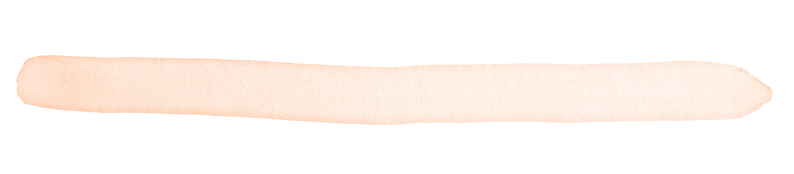
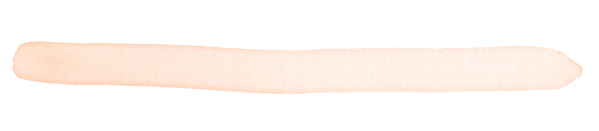
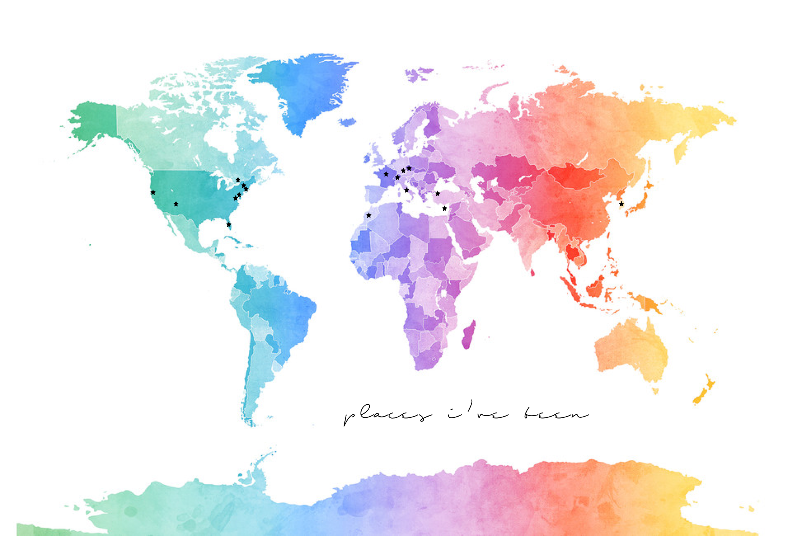

Hello! My name is Danah Han and I'm a freshman at Dartmouth College, hailing originally from Long Island, NY. I currently plan on majoring in Computer Science.
I view development as an outlet through which I can fuse my interests in art and technology. I love the methodical and creative process of using code to build structure, then using art and design to add my own style to the final product.
Things I Love: Being Creative, Spotify, My Family, A Good Iced Coffee, Remember the Titans,
Nat King Cole, Frank Sinatra, Tony Bennett
Unpopular Opinions I Hold: (1) Akon and T-Pain should both make comebacks, (2) Acai bowls are overrated.
Life Goals: (1) Become Miranda Priestly, (2) Take a cross-country road trip, (3) Never stub my toe on a piece of furniture again.
